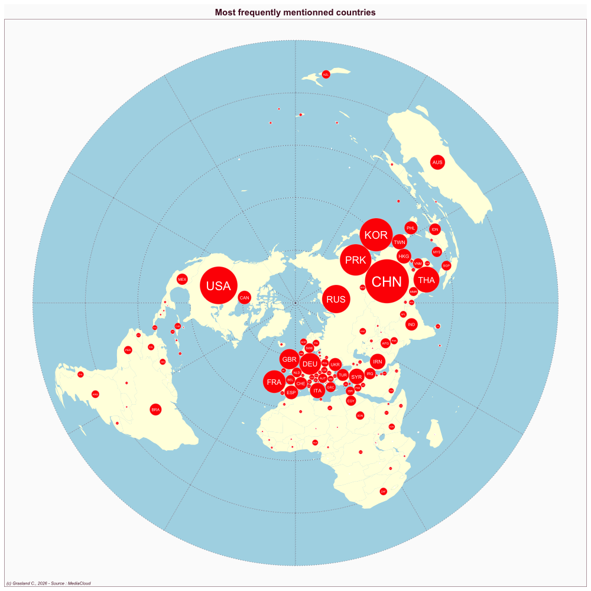
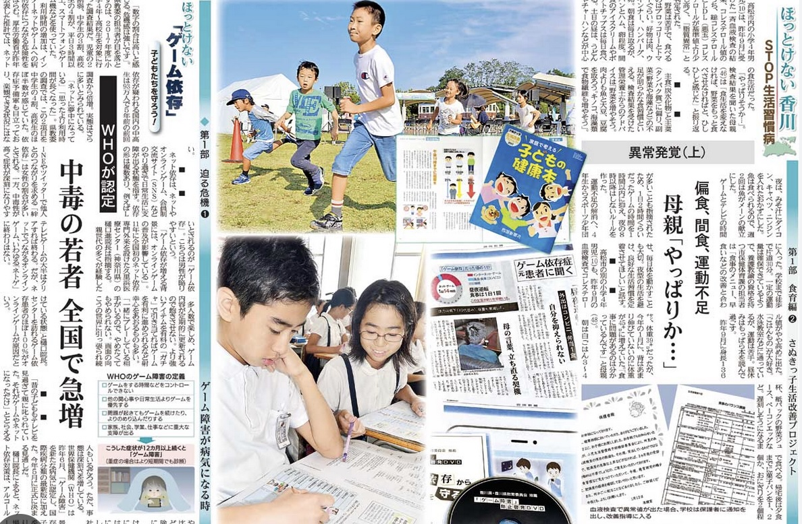

Japan
- Website : Shikoku Shimbun
Scale
- Global
- National
Topics
- General news
- Political news
- Economic news
Publications
McNeill D. 2019. Japan’s contemporary media. In Critical Issues in Contemporary JapanRoutledge; 59–72.


Japan